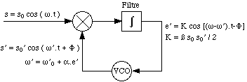
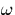
. Ce dernier est mlang (multipli) celui s' de sortie du VCO (Voltage Controlled Oscillator), ce qui donne un signal de deux composantes sinusodales dont les pulsations sont la somme et la diffrence des pulsations des signaux d'entre. A la suite du passage du filtre, seule la composante correspondant la diffrence des pulsations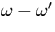
est retenue, pour ensuite tre rinjecte l'entre du VCO. Ainsi, c'est bien l'cart en frquences qui, par rtroaction, conduit le systme un retour l'quilibre, i.e., une galit entre la frquence du signal transmis s et celle du signal e' l'entre du VCO, ce qui dtermine par consquent l'amplitude de ce dernier. Dans le cas de la dmodulation FSK, le signal transmis ne possde que deux frquences (f0 et f1), ce qui dtermine donc pour le signal d'entre du VCO les deux amplitudes diffrentes (l'tat haut et l'tat bas) correspondant au signal binaire d'avant modulation.Avec les notations de la figure C.1, on obtient:
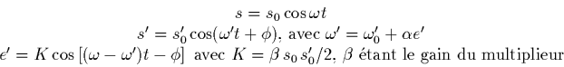
L'quilibre se traduit par
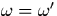
, ce qui implique:
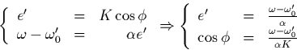
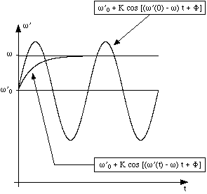
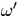
, i.e., une affinit prs, le signal d'entre e' du VCO) sont montres, d'une part une droite horizontale correspondant la frquence constante du signal transmis s, d'autre part une sinusode reprsentant la pulsation du signal de sortie s' du VCO lorsque le signal d'entre e' de ce dernier est de frquence constante (et valant, sur le schma,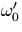
, c'est--dire la pulsation initiale de la sortie du VCO). Enfin, une dernire courbe reprsente la marche de la pulsation vers sa valeur d'quilibre .Partons de l'instant t=0 et
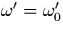
. On a donc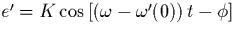
. Ds lors, comme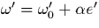
, va augmenter en suivant la sinusode. e' vaut donc maintenant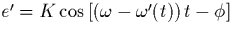
, ce qui correspond une sinusode de priode plus grande que celle dessine, et c'est cette dernire sinusode que va maintenant suivre. Mais comme continue d'augmenter, la priode de la sinusode continue elle aussi de crotre, ce qui fait augmenter de moins en moins vite jusqu' sa valeur asymptotique, qui est sa valeur d'quilibre .Remarquons que nous avons fait partir notre sinusode d'une valeur nulle, alors que ceci n'est absolument pas obligatoire. Le raisonnement resterait toutefois analogue, et l'on montrerait de mme qu'il y aurait convergence, quitte passer par une brve phase transitoire de divergence (ce cas se prsente lorsque, par rapport , la sinusode ne part pas du ct de ).